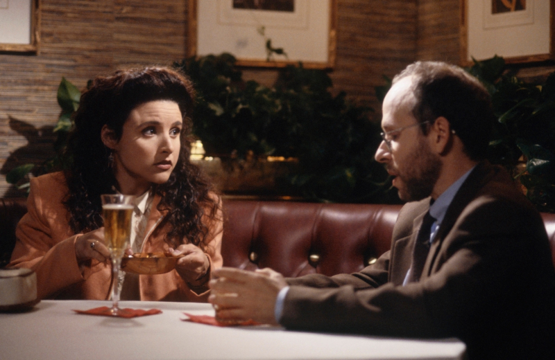

In the "show about nothing", the writers, headlined by Jerry Seinfeld and Larry David did a great job making something out of nothing. They pulled this off mainly with a cast of memorable characters and hilarious storylines.
Jerry can be best described by his good buddy and next door neighbor as having a "Peter Pan complex". The show spans his his late 30's and early 40's(35-44). He loves super heroes, sports, and sneakers. He is also described by many of his exes as immature. However, he is a buttoned down individual carrer-wise. A sucessful stand-up comedian with a couple coveted Late Night Show appearances, Jerry had a lot going for him. Jerry's apartment is the main setting for the show. Along with the coffee shop, it was the place of choice for the foursome of friends to convene and discuss the interesting occurances in their otherwise ordinary lives. Be it a sticky situation for George, guy or work problems for Elaine, or a rediculous scheme from Kramer, Jerry would have a funny response before offering his two cents.
George Costanza. The short, stocky bald man seemingly never has anything going for him. George's Character was based on Larry David. Larry and Jerry were and still remain very close friends, with the former going on to create his own show, "Curb Your Enthusiasm" which in my opinion is actually better than Seinfeld. For most of the show, he is unemployed but for the few moments he does manage to find a job, he is teetering on the edge of getting fired. Although he manages to get a good number of relationships, they almost always end badly due to his clumsy ways. However, of the whole crew, he was the closest one to ever getting married. His yearlong engagement was canceled after his fiancee died as a result of his frugality. George's parents who always seem to be arguing are one the souorces of his issues in life and probably the reason he turned out the way he did. However, no matter how directionless his life seemed, he could always point you in the right direction when you needed a good bathroom to use.
| # of love interests | # of engagements | |
|---|---|---|
| Jerry | 45 | 1 |
| George | 47 | 1 |
| Elaine | 29 | 1 |
| Kramer | 16 | 0 |
A wise man once said "show me your friends and ill tell you what kind of person you are".
Youve probably heard of the phrase "a mans man" which describes a guy who other guys kind of look up to and want to hang around. Elaine was a "mans woman". She had no close female friends(by choice) and hung around instead with her 3 guy friends. Although unstable at times, her career as a writer was what can be described as "decent". At it's peak, she was the president of a big catalog company and at it low, she was sock shopping for her boss. Just like the others, Elaine had her share of good and bad relationships, including a short lived one with Jerry. She was briefly engaged at one point but that lasted only a couple hours as her fiancee got arrested, that coupled with the fact he was going bald. Of course, after spending so much time with the guys, she was bound to pick up thier superficiality.
In just about every scene Kramer was in, he brought life into it. As a matter of fact, he created my favorite scene in the whole series(see below). The infamous "little toe scene". Although we never did figure out what Kramer did for a living, he somehow managed to pay for his rent. Food was taken care of by his next door neighbor Jerry as what belonged to Jerry's refrigerator also belonged to Kramer. Kramer at one point moved to LA in hopes of kickstarting an acting career but that didnt work out. Despite being a dufus, Kramer did have moments of intelligence every now and then, even coming up with a couple great business ideas he was never able to execute. With all the time on his hands, Kramer spends it at Jerry's, playing golf, hanging with Newman, or just doing things a guy named Kramer would do.
After contemplating a lot about his life and of course making a pact with Jerry, George decides to propose to his girlfriend Susan. Soon after, he realizes he doesnt want to get married and things spiral downwards from there till the death of Susan.
After a dispute with Jerry over keys, Kramer moves to LA to pursue his dreams of becoming an actor. This fails horribly and instead, he is mistaken for a serial killer and temporarily put behind bars.
After Jerry declares he's had enough of the "kiss-hello", Kramer goes in and kisses him on the lips--just as George walks in. Statistics say viewership in the south took a tank after this episode.
In a bizarre series of events, the pilot to the sitcom created by George and Jerry is cancelled despite being loved by viewers. This is due to the fact that the guy who backed them quits his job and heads off to sea. He did so in an attempt to win Elaine back after being enticed by her cleavage.
Cox made an appearance as one of Jerry's girlfriends
Cranston actually had somewhat of a recurring role as a dentist who was also a friend to the group. He also served as a love interest to Elaine at one point.
Loughlin made her appearance on Seinfeld as one of Jerry's girlfriends. In the episode, she helped Jerry get in touch with his unused emotion of anger. No, she did not bribe her way onto the show.
Hernandez made a couple appearances on the show as himself. He went on a couple dates with Elaine and befriended Jerry. Oh and he was in game 6.